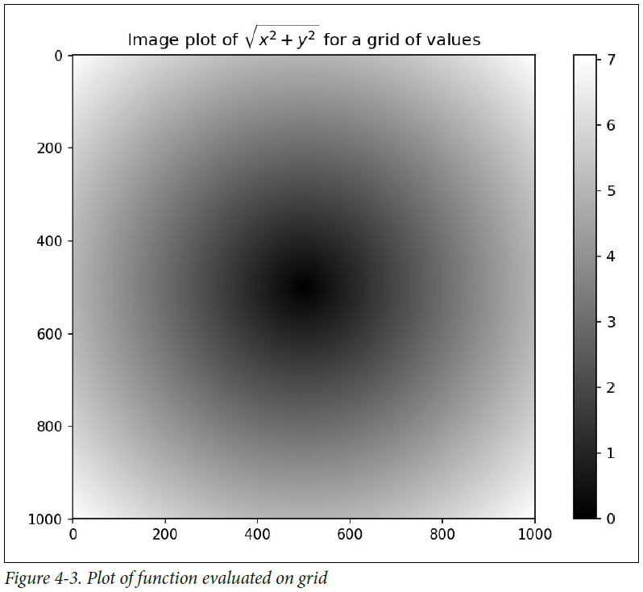
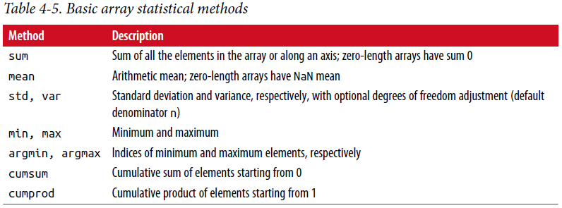
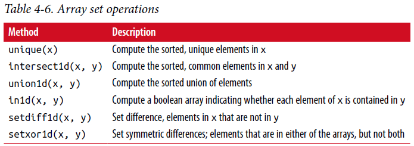

4.3 面向数组的数组编程¶
使用NumPy数组使你能够用简洁的数组表达式表达许多数据处理任务而不要写循环。 用数组表达式替换显示循环的实践一般称为向量化。 一般，向量化操作时常比纯Python等效实现快一两个（或更多）数量级，在任何种类的数值计算上影响更大。 在附录A中，我阐述了广播(broadcasting),一种对于向量化计算强大的方法。
举个简单的例子，假设我们希望通过规则的网格值求函数sqrt(x^2 + y^2)值。 np.meshgrid函数接受2个一维数组并产生2个二维矩阵，对应于两个数组中的所有（x，y）对:
In [155]: points = np.arange(-5, 5, 0.01) # 1000 equally spaced points
In [156]: xs, ys = np.meshgrid(points, points)
In [157]: ys
Out[157]:
array([[-5. , -5. , -5. , ..., -5. , -5. , -5. ],
[-4.99, -4.99, -4.99, ..., -4.99, -4.99, -4.99],
[-4.98, -4.98, -4.98, ..., -4.98, -4.98, -4.98],
...,
[ 4.97, 4.97, 4.97, ..., 4.97, 4.97, 4.97],
[ 4.98, 4.98, 4.98, ..., 4.98, 4.98, 4.98],
[ 4.99, 4.99, 4.99, ..., 4.99, 4.99, 4.99]])
现在计算函数值是写两个点相同表达式的事:
In [158]: z = np.sqrt(xs ** 2 + ys ** 2)
In [159]: z
Out[159]:
array([[ 7.0711, 7.064 , 7.0569, ..., 7.0499, 7.0569, 7.064 ],
[ 7.064 , 7.0569, 7.0499, ..., 7.0428, 7.0499, 7.0569],
[ 7.0569, 7.0499, 7.0428, ..., 7.0357, 7.0428, 7.0499],
...,
[ 7.0499, 7.0428, 7.0357, ..., 7.0286, 7.0357, 7.0428],
[ 7.0569, 7.0499, 7.0428, ..., 7.0357, 7.0428, 7.0499],
[ 7.064 , 7.0569, 7.0499, ..., 7.0428, 7.0499, 7.0569]])
作为第9章的预览，我使用matplotlib来创建这个二维数组的可视化:
In [160]: import matplotlib.pyplot as plt
In [161]: plt.imshow(z, cmap=plt.cm.gray); plt.colorbar()
Out[161]: <matplotlib.colorbar.Colorbar at 0x7f715e3fa630>
In [162]: plt.title("Image plot of $\sqrt{x^2 + y^2}$ for a grid of values")
Out[162]: <matplotlib.text.Text at 0x7f715d2de748>
见表4-3，这里我使用matplotlib中imshow函数从一个函数值的二维数组创建图像。
{kind=link}
将条件逻辑表示为数组运算¶
numpy.where是三元表达式x if condition else y的向量化版本。 假设我们有一个布尔数组和两个值数组:
In [165]: xarr = np.array([1.1, 1.2, 1.3, 1.4, 1.5])
In [166]: yarr = np.array([2.1, 2.2, 2.3, 2.4, 2.5])
In [167]: cond = np.array([True, False, True, True, False])
假设相应位置的值在条件中为True时我们从xarr取值，否则从yarr取值。 列表推导做这件事可能像这样:
In [168]: result = [(x if c else y)
.....: for x, y, c in zip(xarr, yarr, cond)]
In [169]: result
Out[169]: [1.1000000000000001, 2.2000000000000002, 1.3, 1.3999999999999999, 2.5]
这有多个问题。 首先，大于大型数组这并不快（因为所有工作都是在解释的Python代码中完成的）。 第二，对于多维数组无法工作。用np.where你可以简洁地写这个:
In [170]: result = np.where(cond, xarr, yarr)
In [171]: result
Out[171]: array([ 1.1, 2.2, 1.3, 1.4, 2.5])
np.where的第二第三个参数不需要是数组； 一个或两个都可以是标量。 where在数据分析中的典型使用是基于另一个数组产生一个新的值数组。 假设你有一个随机生成的矩阵数据并且你想用2替换全部的正数，用-2替换全部的负数。 用np.where做这个很简单:
In [172]: arr = np.random.randn(4, 4)
In [173]: arr
Out[173]:
array([[-0.5031, -0.6223, -0.9212, -0.7262],
[ 0.2229, 0.0513, -1.1577, 0.8167],
[ 0.4336, 1.0107, 1.8249, -0.9975],
[ 0.8506, -0.1316, 0.9124, 0.1882]])
In [174]: arr > 0
Out[174]:
array([[False, False, False, False],
[ True, True, False, True],
[ True, True, True, False],
[ True, False, True, True]], dtype=bool)
In [175]: np.where(arr > 0, 2, -2)
Out[175]:
array([[-2, -2, -2, -2],
[ 2, 2, -2, 2],
[ 2, 2, 2, -2],
[ 2, -2, 2, 2]])
在使用np.where时你能结合标量和数组。 例如，我能用常数2替换arr中全部正数，像这样:
In [176]: np.where(arr > 0, 2, arr) # set only positive values to 2
Out[176]:
array([[-0.5031, -0.6223, -0.9212, -0.7262],
[ 2. , 2. , -1.1577, 2. ],
[ 2. , 2. , 2. , -0.9975],
[ 2. , -0.1316, 2. , 2. ]])
传递给np.where的数组可以不仅仅是大小相等的数组或标量。
数学和统计方法¶
一组数学函数，用于计算有关整个数组或关于整个数组沿轴数据的统计信息，可作为数组类的方法访问。 你可以通过调用数组实例方法或使用顶层NumPy函数来使用聚合(aggregation)（通常称为缩减），如sum，mean和std（标准差）。
这儿我随机生成一些标准正态分布数据和计算一些聚合统计信息:
In [177]: arr = np.random.randn(5, 4)
In [178]: arr
Out[178]:
array([[ 2.1695, -0.1149, 2.0037, 0.0296],
[ 0.7953, 0.1181, -0.7485, 0.585 ],
[ 0.1527, -1.5657, -0.5625, -0.0327],
[-0.929 , -0.4826, -0.0363, 1.0954],
[ 0.9809, -0.5895, 1.5817, -0.5287]])
In [179]: arr.mean()
Out[179]: 0.19607051119998253
In [180]: np.mean(arr)
Out[180]: 0.19607051119998253
In [181]: arr.sum()
Out[181]: 3.9214102239996507
像mean和sum函数有一个可选轴参数，计算沿给定轴统计信息，结果保存在一个更低维度数组中:
In [182]: arr.mean(axis=1)
Out[182]: array([ 1.022 , 0.1875, -0.502 , -0.0881, 0.3611])
In [183]: arr.sum(axis=0)
Out[183]: array([ 3.1693, -2.6345, 2.2381, 1.1486])
这里，arr.mean(1)意思是”沿列计算均值”，arr.sum(0)意思是”沿行求和”。
其它的方法如cumsum和cumprod不进行聚合，代替产生一个中间(intermediate)结果的数组:
In [184]: arr = np.array([0, 1, 2, 3, 4, 5, 6, 7])
In [185]: arr.cumsum()
Out[185]: array([ 0, 1, 3, 6, 10, 15, 21, 28])
在多维数组中，像cumsum这样的累积函数返回相同尺寸的数组，但是根据每个更低维度切片沿指示的轴进行部分聚合计算:
In [186]: arr = np.array([[0, 1, 2], [3, 4, 5], [6, 7, 8]])
In [187]: arr
Out[187]:
array([[0, 1, 2],
[3, 4, 5],
[6, 7, 8]])
In [188]: arr.cumsum(axis=0)
Out[188]:
array([[ 0, 1, 2],
[ 3, 5, 7],
[ 9, 12, 15]])
In [189]: arr.cumprod(axis=1)
Out[189]:
array([[ 0, 0, 0],
[ 3, 12, 60],
[ 6, 42, 336]])
Note
沿某个轴进行操作不是切片意义（垂直轴）上对该轴数据进行操作，而是坐标轴意义（平行轴）上对该轴每个数据进行操作。
见表4-5 完全的清单。我们将在后面章节看到许多实际使用这些方法的例子。
{kind=link}
布尔数组方法¶
在前面的方法中，布尔值被强制为1（True）和0（False）。 因此，sum通常用作计算布尔数组中True值的方法(as a means of):
In [190]: arr = np.random.randn(100)
In [191]: (arr > 0).sum() # Number of positive values
Out[191]: 42
有两个额外的方法，any和all，对布尔数组特别有用。 any测试在数组中是否有一个或多个True，all检查是否每个值都是True:
In [192]: bools = np.array([False, False, True, False])
In [193]: bools.any()
Out[193]: True
In [194]: bools.all()
Out[194]: False
这些方法对非布尔型数组也起作用，非0元素视为True。
分类¶
像Python内置列表类型，NumPy数组可以使用sort方法原位排序:
In [195]: arr = np.random.randn(6)
In [196]: arr
Out[196]: array([ 0.6095, -0.4938, 1.24 , -0.1357, 1.43 , -0.8469])
In [197]: arr.sort()
In [198]: arr
Out[198]: array([-0.8469, -0.4938, -0.1357, 0.6095, 1.24 , 1.43 ])
你可以原位排序多维数组中的每一维值，通过传递轴编号沿轴排序:
In [199]: arr = np.random.randn(5, 3)
In [200]: arr
Out[200]:
array([[ 0.6033, 1.2636, -0.2555],
[-0.4457, 0.4684, -0.9616],
[-1.8245, 0.6254, 1.0229],
[ 1.1074, 0.0909, -0.3501],
[ 0.218 , -0.8948, -1.7415]])
In [201]: arr.sort(1)
In [202]: arr
Out[202]:
array([[-0.2555, 0.6033, 1.2636],
[-0.9616, -0.4457, 0.4684],
[-1.8245, 0.6254, 1.0229],
[-0.3501, 0.0909, 1.1074],
[-1.7415, -0.8948, 0.218 ]])
顶层方法np.sort返回数组排好序的副本而不是原位修改数组。 一个快速但不优雅的方式计算数组分位点是排序并且选择一个具体范围的值:
In [203]: large_arr = np.random.randn(1000)
In [204]: large_arr.sort()
In [205]: large_arr[int(0.05 * len(large_arr))] # 5% quantile
Out[205]: -1.5311513550102103
有关使用NumPy的排序方法和更高级技术如间接排序的更多详细信息，见附录A. 几个其它与排序相关（例如通过一列或多列排序数据表）的数据处理操作也能够在pandas中找到。
Unique和其它集合逻辑¶
NumPy对于一维数组有一些基本的集合操作。 经常使用的一个是np.unique，返回的数组是排好序的且值唯一:
In [206]: names = np.array(['Bob', 'Joe', 'Will', 'Bob', 'Will', 'Joe', 'Joe'])
In [207]: np.unique(names)
Out[207]:
array(['Bob', 'Joe', 'Will'],
dtype='<U4')
In [208]: ints = np.array([3, 3, 3, 2, 2, 1, 1, 4, 4])
In [209]: np.unique(ints)
Out[209]: array([1, 2, 3, 4])
与np.unique对比，纯Python替代方案是::
In [210]: sorted(set(names)) # 是对np.unique的很好诠释
Out[210]: ['Bob', 'Joe', 'Will']
另一个函数，np.in1d测试一个数组中值成员是否在另一个数组中，返回一个布尔数组:
In [211]: values = np.array([6, 0, 0, 3, 2, 5, 6])
In [212]: np.in1d(values, [2, 3, 6])
Out[212]: array([ True, False, False, True, True, False, True], dtype=bool)
表4-6是NumPy集合函数清单
{kind=link}